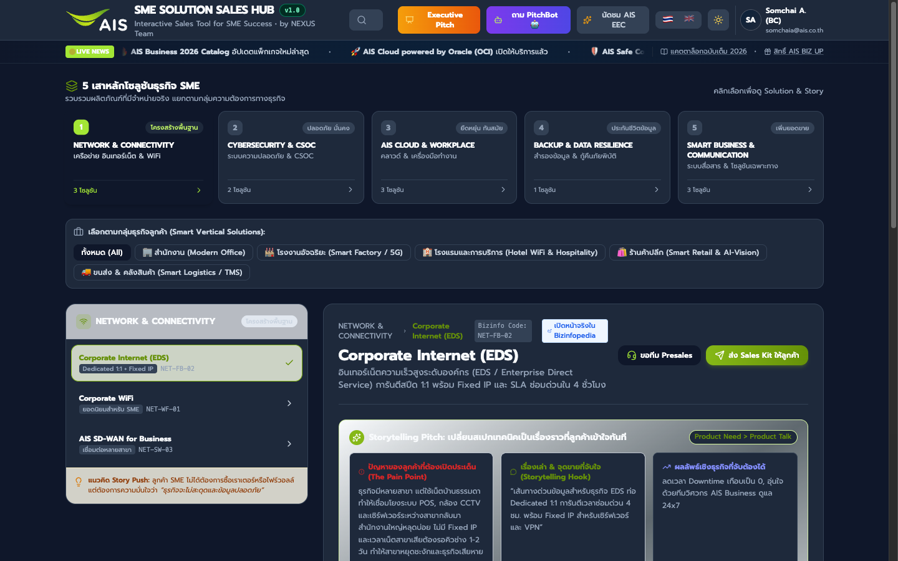
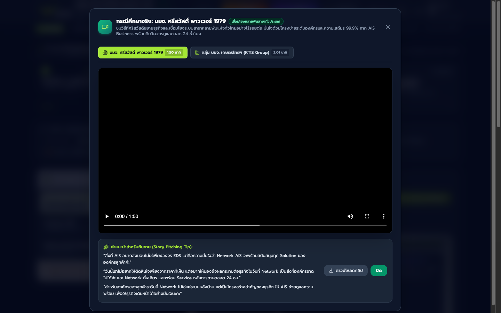
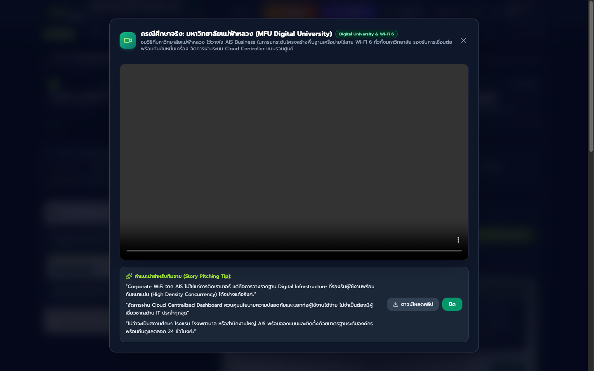
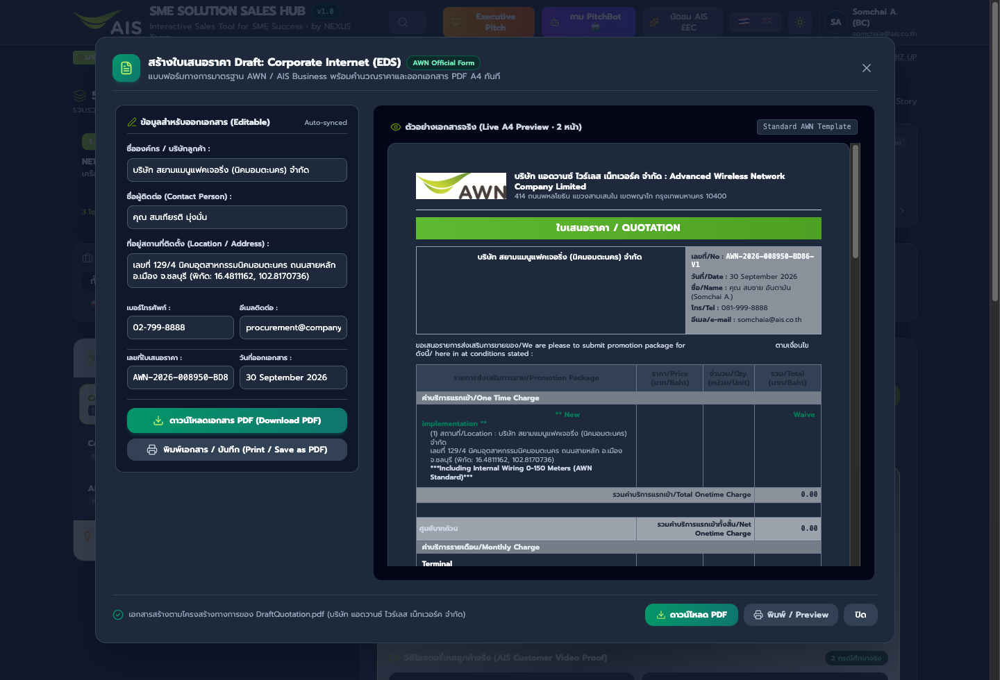
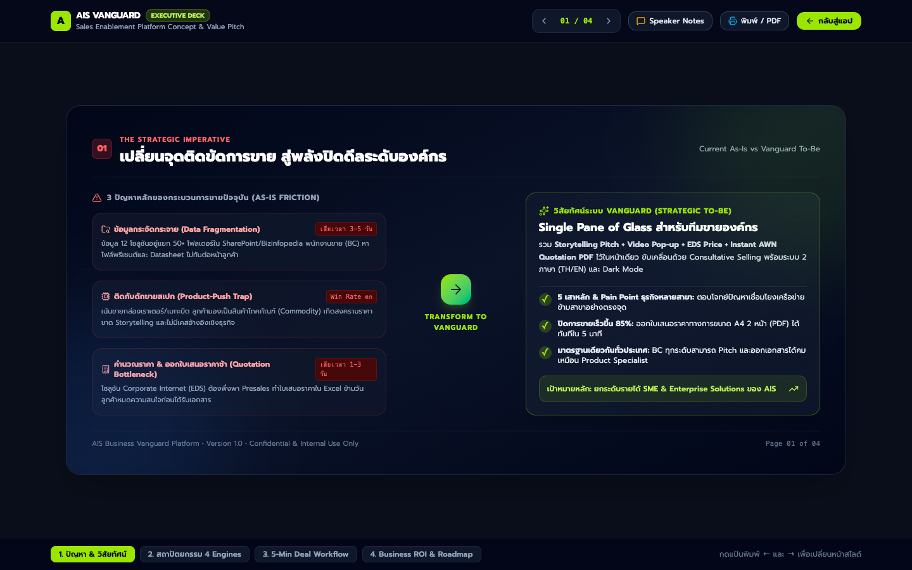

Sales Enablement Platform for SME & Enterprise Solutions • AWN / AIS Business
AIS Vanguard Sales Hub (Version 1.0) คือแพลตฟอร์ม Sales Enablement แบบครบวงจรที่พัฒนาขึ้นเพื่อปฏิวัติวงจรการขายบริการโทรคมนาคมและดิจิทัลโซลูชันสำหรับลูกค้าองค์กร (Enterprise & SME) ของ AIS Business / บริษัท แอดวานซ์ ไวร์เลส เน็ทเวอร์ค จำกัด (AWN) โดยรวมศูนย์ข้อมูลที่เคยกระจัดกระจายให้เป็น Single Pane of Glass ช่วยให้พนักงานขาย (Business Consultant: BC) สามารถค้นหาโซลูชัน, เปิดประเด็นด้วยสตอรี่วิดีโอเคสจริง, และ สร้างใบเสนอราคาทางการ (Draft Quotation PDF 2 หน้า A4) ได้เสร็จสิ้นภายใน 5 นาทีต่อหน้าลูกค้า ลดระยะเวลา Sales Cycle ลงกว่า 85%
จัดหมวดหมู่ 12 โซลูชันตามความต้องการทางธุรกิจจริง แบ่งเป็น 5 เสาหลัก: 1) Network & Connectivity, 2) Cybersecurity & CSOC, 3) AIS Cloud & Workplace, 4) Backup & Data Resilience, และ 5) Smart Business & Communication พร้อมระบบตัวกรอง 5 กลุ่มอุตสาหกรรม (สำนักงาน, โรงงาน, โรงแรม, ค้าปลีก, ขนส่ง)

ระบบเล่นวิดีโอสตอรี่จริงในรูปแบบ Pop-up Theater Modal (16:9 HD) ไม่เปิดแท็บใหม่และไม่หลุดจากหน้างาน พร้อมแท็บสลับเคสลูกค้า (Switcher Tabs), คำแนะนำสำหรับทีมขาย (Story Pitching Tips), และปุ่มดาวน์โหลดคลิปออฟไลน์

เชื่อมโยงระบบสาขาหลายพันแห่งทั่วไทยอย่างไร้รอยต่อ เน้นความเสถียร 99.9% และทีมวิศวกรดูแล 24 ชั่วโมง
โครงข่าย EDS เชื่อมต่อสำนักงานใหญ่ โรงงานอุตสาหกรรม และพื้นที่เกษตรกรรมห่างไกล สัญญาณครอบคลุม
เพิ่มวิดีโอสตอรี่จริงในหมวด Corporate WiFi (NET-WF-01) เคส มหาวิทยาลัยแม่ฟ้าหลวง (`WIFIDigitalUniversity.mp4`, 3:25 นาที) ชูศักยภาพ High-Density Concurrency รองรับการเชื่อมต่อพร้อมกันนับหมื่นเครื่อง จัดการผ่าน Centralized Cloud Controller

ปรับเปลี่ยนแกนการขาย Corporate Internet จากการเน้นสเปกความเร็ว เป็นการแก้ปัญหาธุรกิจที่มีหลายสาขา เช่น ระบบ POS หน้าร้านหลุด, กล้อง CCTV ออฟไลน์, การเชื่อม VPN กลับสำนักงานใหญ่ล่ม และตัดวงจรการรอช่าง 1-2 วัน ด้วย SLA MTTR ซ่อมเสร็จใน 4 ชั่วโมง
ระบบคำนวณราคาและสร้างใบเสนอราคามาตรฐานของ บริษัท แอดวานซ์ ไวร์เลส เน็ทเวอร์ค จำกัด (AWN) ทันทีใน 30 วินาที พร้อมพรีวิวแบบ Real-time ขนาด 2 หน้า A4 และปุ่มพิมพ์/บันทึก PDF ทันทีต่อหน้าลูกค้า

ชุดสไลด์นำเสนอเชิงกลยุทธ์ 4 หน้า (`executive_deck.html`) พร้อมลิ้นชักบทพูด (Speaker Notes) และฟีเจอร์ Bilingual (🇹🇭 / 🇬🇧), Executive Dark Mode และ Marquee Ticker ข่าวสารเรียลไทม์

| ชื่อไฟล์ / ทรัพยากร | ขนาด | บทบาทและหน้าที่ | สถานะ |
|---|---|---|---|
| index.html | 279 KB | แอปพลิเคชันหลัก, แดชบอร์ด 5 เสาหลัก, Video Modal & Routing | Stable v1.0 |
| draft_quotation.js | 38 KB | เอนจินออกใบเสนอราคา AWN Draft 2 หน้า A4 & Thai BahtText | Verified |
| solution_kits.js | 175 KB | ชุดเครื่องมือ Sales Enablement 12 โซลูชัน & Site References | Updated |
| i18n.js | 46 KB | ระบบแปลภาษา 2 ภาษา (ไทย/อังกฤษ) ครบทุกแคตตาล็อก | Bilingual |
| WIFIDigitalUniversity.mp4 | 28 MB | วิดีโอสตอรี่เคส ม.แม่ฟ้าหลวง (Wi-Fi 6 Digital University) | HD 720p |
| BusinessSrisawad-Power-1979.mp4 | 24 MB | วิดีโอสตอรี่เคส บมจ. ศรีสวัสดิ์ พาวเวอร์ 1979 (หลายสาขา) | HD 720p |
| Business-KTIS_001_720p.mp4 | 27 MB | วิดีโอสตอรี่เคส กลุ่ม บมจ. เกษตรไทย อินเตอร์เนชั่นแนล (โรงงาน) | HD 720p |
| vanguard_project_v1.0.zip | 114 MB | แพ็กเกจพกพารวมไฟล์ทั้งหมดพร้อมเปิดใช้งานออฟไลน์ | Release Package |